library(tidyverse)
library(naniar)
library(bookdown)
library(stringr)
library(stringi)
library(lubridate)
library(DT)
library(forcats)
library(ggthemes)
library(corrplot)
library(mltools)
library(data.table)
library(visdat)
library(janitor)
library(cowplot)
library(caTools)
library(pscl)
library(ROCR)
library(caret)
library(xgboost)
library(randomForest)
library(lightgbm)
library(Matrix)
library(catboost)
library(kableExtra)
library(plotly)
library(ggExtra)Bank account churn classification
🏦 💸

1 What is a bank churn and why does it occur ?
With the advent of digital banking, it has become extremely convenient for users to open a new bank account. As opposed to the age old tradition of submitting multiple documents and credit histories after visiting a bank, the process has been revamped by a great deal with an user needing less than 10 minutes to open an account in the comfort of their couches.
However, with digital banking, it has also become convenient for users to close a bank account, more commonly termed as a “churn”. While this may appear to be a win for consumers, it is however important to understand the reasons and the effects that entail from a bank churn.
Reasons for a churn to occur
A bank account churn could occur for a multitiude of reasons which are important for banks to analyse to reduce attrition of customers and also remain competitive in the market. Some of the reasons are:
- Fees and Charges: High fees or unexpected charges can prompt customers to switch banks. This may include monthly maintenance fees, ATM fees, overdraft fees, and other charges.
- Low Interest Rates: If a bank offers low interest rates on savings accounts or certificates of deposit, customers might look for better opportunities elsewhere to maximize their returns.
- Poor Customer Service: Inadequate customer service, long wait times, and unhelpful staff can lead to frustration and dissatisfaction, prompting customers to seek better service elsewhere.
- Branch Accessibility: Limited access to physical branches or ATMs can be a significant factor. If a customer moves to an area where their current bank has limited presence, they might switch to a more accessible option.
- Technology and Online Services: Customers may switch to a bank that provides better online and mobile banking services, as technology plays an increasingly crucial role in the banking experience.
- Incentives and Promotions: Banks often attract new customers by offering promotions, bonuses, or better interest rates. Existing customers may churn to take advantage of these offers.
- Changes in Financial Needs: As individuals’ financial situations evolve, their banking needs may change. For example, a customer might require more advanced financial products, and if their current bank can’t meet those needs, they may switch to a different institution.
- Mergers and Acquisitions: Changes resulting from bank mergers or acquisitions, such as alterations in account terms, fees, or service quality, can drive customers to seek alternatives.
- Ethical or Social Reasons: Some customers may choose to switch banks due to concerns about a bank’s ethical practices, social responsibility, or involvement in controversial activities.
- Security Concerns: If a bank experiences a security breach or if customers perceive their accounts to be at risk, they may opt to move their funds to a more secure institution.
- Better Financial Products: Customers may switch banks to access better financial products, such as higher-interest savings accounts, more competitive loan rates, or improved credit card offerings.
- Life Events: Major life events like marriage, divorce, retirement, or the death of a spouse can prompt individuals to reassess their banking relationships and switch to better-suited options.
2 Importing the relevant libraries and dataset
In order to initiate our analysis of the bank account data, we will read all the required libraries and then take a glimpse of how our data looks like.
| id | CustomerId | Surname | CreditScore | Geography | Gender | Age | Tenure | Balance | NumOfProducts | HasCrCard | IsActiveMember | EstimatedSalary | Exited |
|---|---|---|---|---|---|---|---|---|---|---|---|---|---|
| 0 | 15674932 | Okwudilichukwu | 668 | France | Male | 33 | 3 | 0.0 | 2 | 1 | 0 | 181449.97 | 0 |
| 1 | 15749177 | Okwudiliolisa | 627 | France | Male | 33 | 1 | 0.0 | 2 | 1 | 1 | 49503.50 | 0 |
| 2 | 15694510 | Hsueh | 678 | France | Male | 40 | 10 | 0.0 | 2 | 1 | 0 | 184866.69 | 0 |
| 3 | 15741417 | Kao | 581 | France | Male | 34 | 2 | 148882.5 | 1 | 1 | 1 | 84560.88 | 0 |
| 4 | 15766172 | Chiemenam | 716 | Spain | Male | 33 | 5 | 0.0 | 2 | 1 | 1 | 15068.83 | 0 |
| 5 | 15771669 | Genovese | 588 | Germany | Male | 36 | 4 | 131778.6 | 1 | 1 | 0 | 136024.31 | 1 |
3 Data description
Based on a brief research, the description for each variable in the dataset is as follows:
- CustomerId: Unique identifier for each customer
- Surname: Name associated with the customer
- CreditScore: Credit score of the customer
- Geography: Location of the bank account based on geographical location of the bank
- Gender: Gender of the customer
- Age: Current age of the customer
- Tenure: Length of time since the opening of the bank account
- Balance: Current credit balance in the account
- NumOfProducts: Number of banking services used by the customer
- HasCrCard: An indicator for whether the customer has a credit card
- IsActiveMember: Is the customer a regular user of the bank account through transactions
- EstimatedSalary: Estimated earning declared as salary for the customer
- Exited: Has the customer closed the bank account
4 Data cleaning
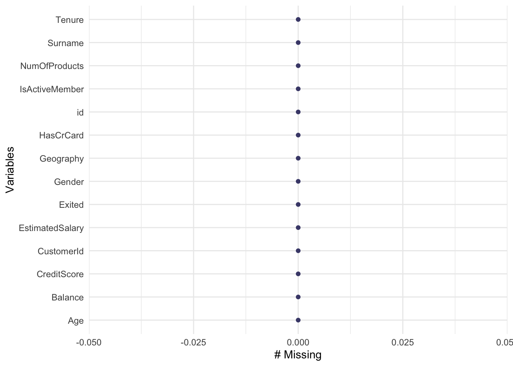
As we can observe from Figure 1, the dataset is clean and does not have any missing values to be dealt with. While this is ideal, it is however not the only check that we must perform in the data.
5 Data sanity checks
Since the customer ID is a unique identification reference number for
| CustomerId | Total_occurrences |
|---|---|
| 15682355 | 121 |
| 15570194 | 99 |
| 15585835 | 98 |
| 15595588 | 91 |
| 15648067 | 90 |
| 15793331 | 90 |
Based on Table 2, we can observe that the same customer ID appears multiple number of times in the dataset when infact, it was supposed to appear just once. Hence, we can consider the CustomerId variable to be serving no purpose in the current dataset. This shall be dropped in the feature selection section.
The estimated salary variable indicates the income of each customer declared as a salary. Salaries can never be negative. Let us quickly check if that indeed is the case.
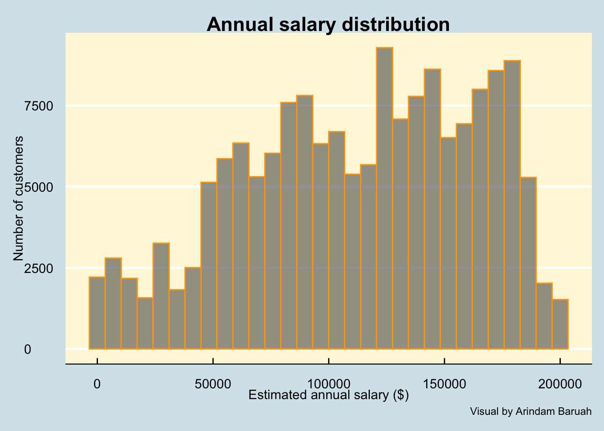
Based on the histrogram of the salaries as illustrated by Figure 2, we can observe that the salaries are indeed positive which is what is expected.
Bank account customers are generally required to be adults (> 18 years). We will check if that holds true for the current dataset and attempt to detect any anomalous data such as negative age.
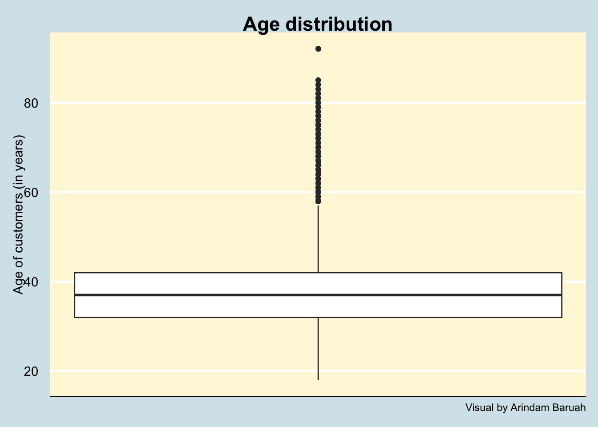
Based on Figure 3, we can observe that the data indeed suggests that the customers are of the right age (>18 years) and there are no anomalous data entries for this variable.
6 Exploratory Data Analysis
Before we create a prediction model, we need to understand how are our variables correlated to one another. This will be done through various visualisations as follows:
6.1 Correlation plot
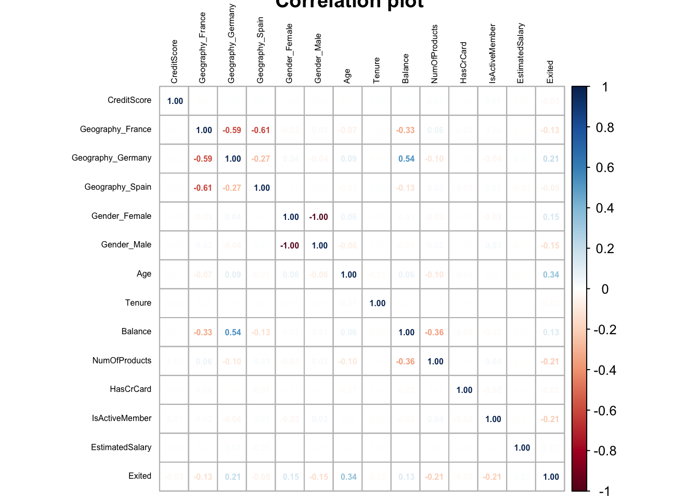
Key takeaway
Based on our understanding of the variables as illustrated by the correlation plot in Figure 4, we can infer that there is no single variable which is highly correlated to the churn indicator. We can also observe that none of the features are highly correlated to one another. This indicates that there is no multicollinearity in the choice of our features.
6.2 Geography wise churn
Let us try to understand if there are any geographical regions which have accounted for high churns.
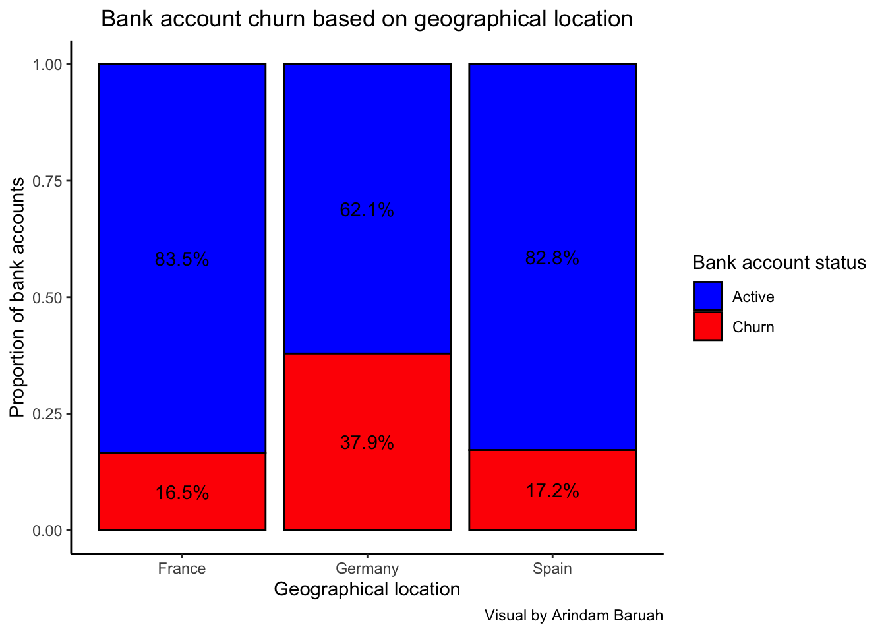
Based on the illustration Figure 5, we can observe that the percentage of churns are significantly higher in Germany as compared to France and Spain where the churn percentage appears to be similar.
Key takeaway
The higher churn % for Germany could indicate issues pertaining to the economy of the country or factors such as loan interest rate in the country. It could also indicate that the banking services or customer services in Germany might be lacking as compared to the other countries which have resulted in the higher churn percentage. Diving deeper into the banking practices of Germany would provide a better understanding as to the reason for the high attrition of customers.
6.3 Age wise bank churn
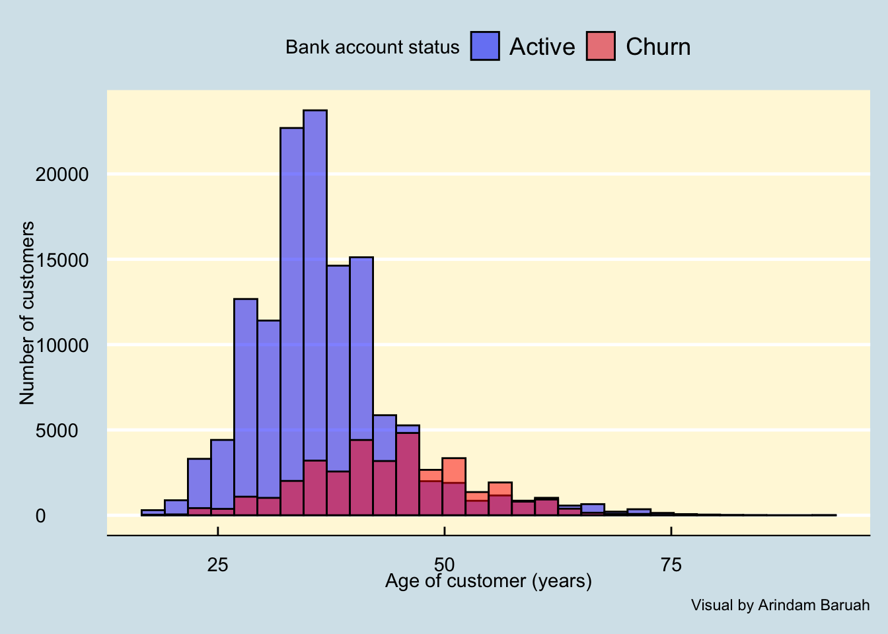
As we can observe through Figure 6, the churns are associated majorly with customers between the ages of 25 and 60.
Key takeaway
The data indicates that after a couple of years since opening a new bank account, customers are observed to close their accounts which could be due to numerous reasons such as:
- Better customer services from other banks
- Low credit score or due to financial bankruptcy of the customer
- High loan interests charged by the bank which may have led the customer to switch to another bank after fulfilling the loan.
6.4 Credit score wise churn
Let us now try to analyse if the credit scores could tell us anything about the likelihood of the bank account churns.
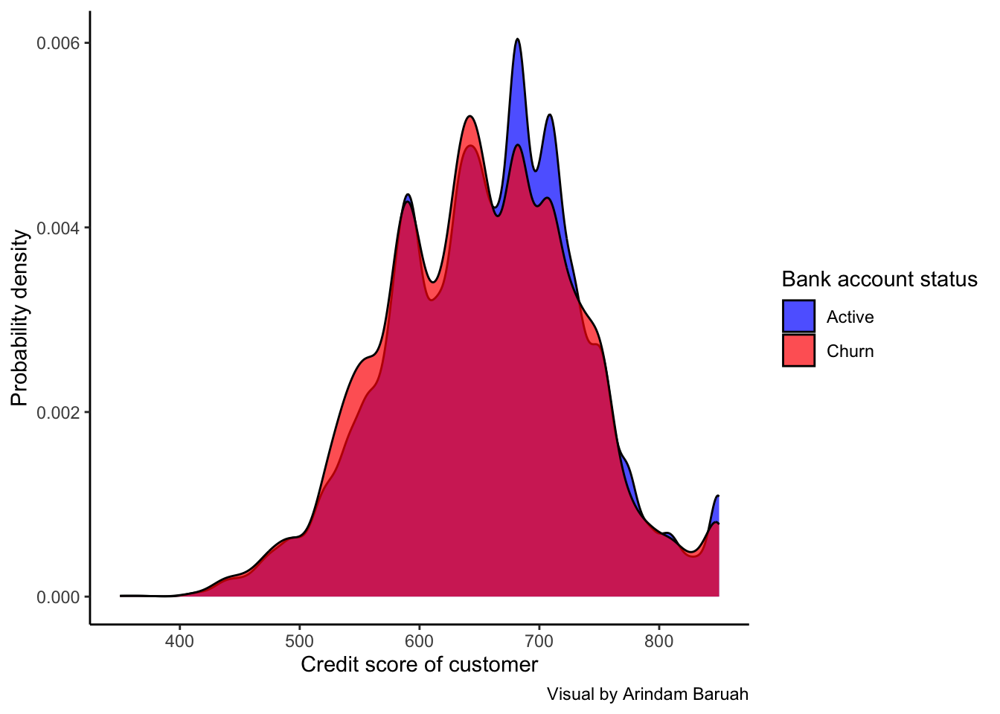
Key takeaway
Based on the credit score distribution of the churned and active accounts as illustrated in Figure 7, we cannot observe any discernible difference in the credit scores which could indicate the likeliness of a bank account churn. This indicates that the credit scores of customers may not be a strong factor leading to them closing their bank accounts.
6.5 Transaction activity wise churn
Next, we can analyse if the churns are mostly from bank accounts which are inactive, possibly due to very low transactions.
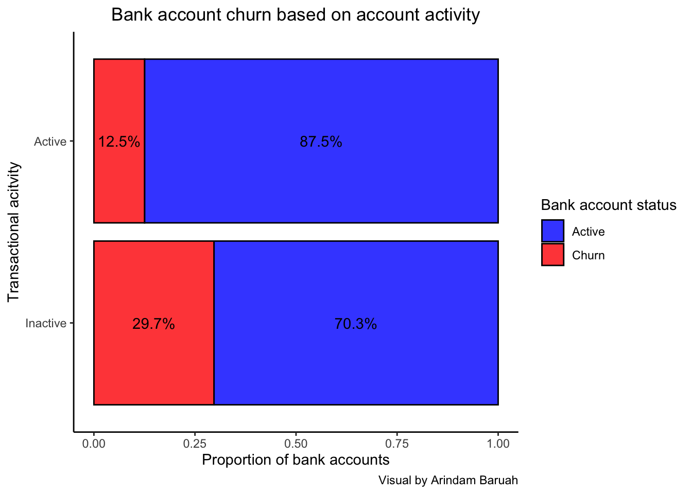
Key takeaway
Based on Figure 8, we can observe that the percentage of the bank churns for inactive accounts are more than twice that of the active accounts.
This indicates that the probability of a churn rises if the transaction activity of the bank account reduces. This could also be measure taken by the bank to reduce the burden of keeping the services activated for accounts which have shown little to no activity for an extended period of duraiton.
6.6 Balance wise churn
Let us try to analyse if the account balance can indicate whether a churn might take place.
For this, we will flag any balance which is 0.
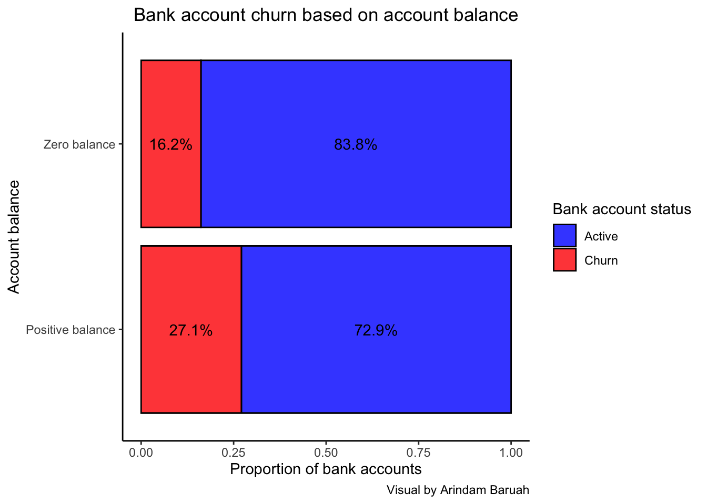
Key takeaway
Figure 9 illustrates the percentage of bank accounts churned for accounts with positive balance and zero balance. Contrary to belief, the percentage of churns are actually higher for accounts with positive balance as compared to zero balance accounts.
This could be due to the fact that account holders with zero balances are generally inactive and may not proactively close their accounts but rather, is done so by the bank to reduce the maintenance cost of keeping zero balance accounts active. However, account holders with positive balance may proactively choose to close their accounts due to various reasons as stated in Section 1 which may lead to the higher percentage of churned accounts.
7 Model creation
Here, we will fit the logistic regression model to the train data as follows.
model_logit <- glm(Exited~.,family=binomial(link='logit'),data=train)Let us study the performance of the logistic regression model through the Receiver Operating Curve (ROC) metric.
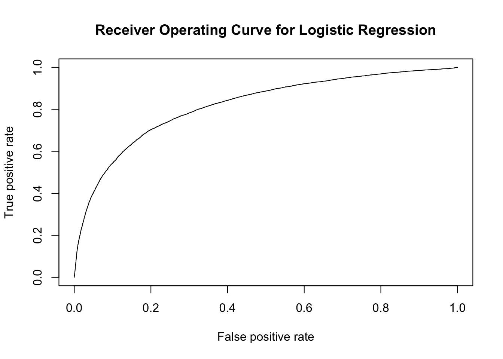
Based on the receiver operating curve as illustrated by Figure 10, we can observe that while a sizeable are of the graph is covered by the curve, it can however by improved by possibly a better classification algorithm.
Figure 11 depicts a more intuitive way to understand the performance of the Logistic Regression. The model was able to predict the churned accounts with an accuracy of 83.4%.
Let us try to use an extra gradient boosted ensemble method commonly termed as the XGboost classifier.
[1] train-logloss:0.430351
[2] train-logloss:0.381727 We observe a marginally better classification accuracy as compared to the logistic regression model for the XGboosted classifier as depicted by Figure 12 with an accuracy of 85.1%.
Let us utilise the LGBM algorithm and train it on the given dataset.
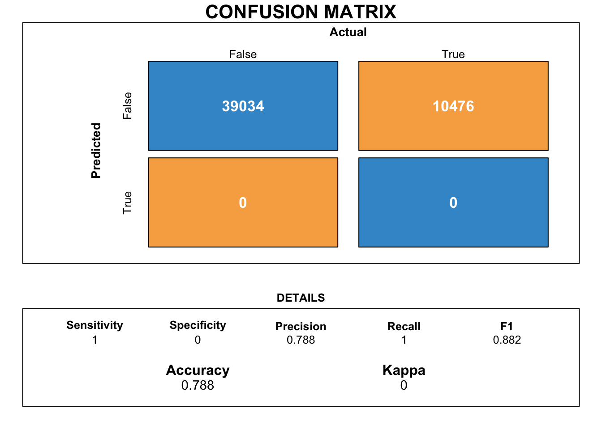
Based on Figure 13, we can observe that the LGB classifier has actually classified poorly with multiple negatives observed in its classification. We can disregard this model for our purpose of classification.
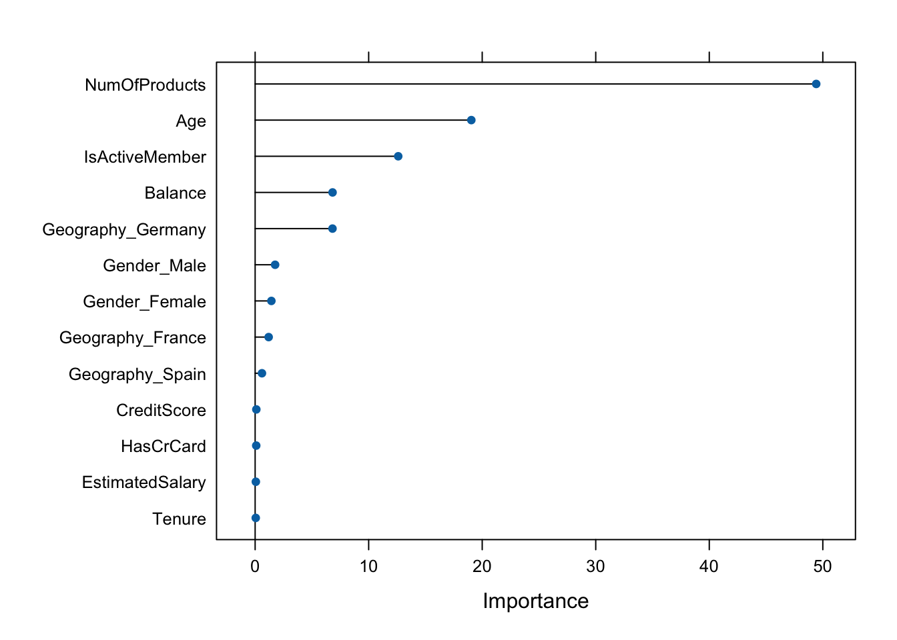
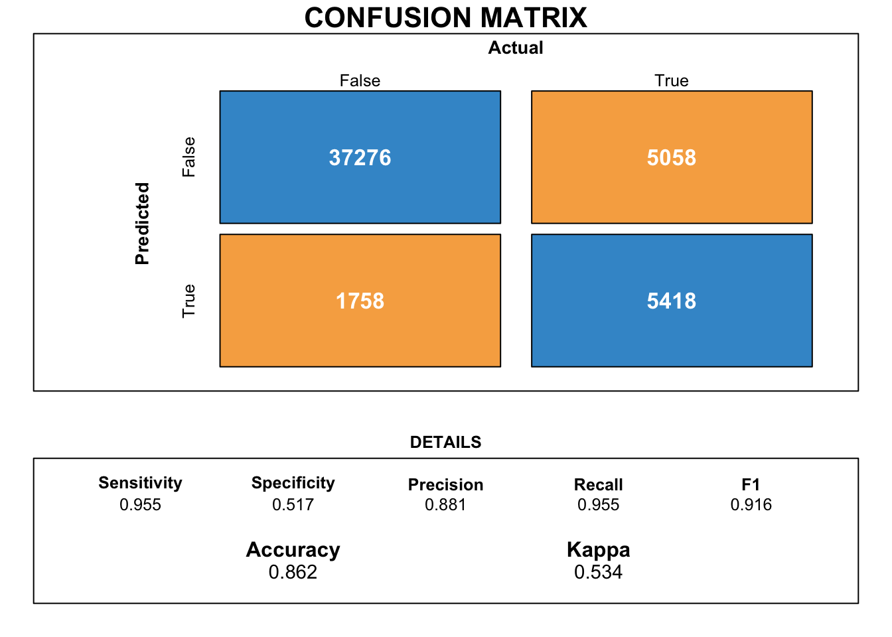
Upon utilising the Catboost classifier, we can observe from Figure 15 that the classifier has a marginally better accuracy when compared to the logistic regression, XGboost and Light GBM.
Additionally, Figure 14 indicates the variables which have the highest importance in predicting the bank account churns. We can observe that the variables, “Number of products” followed by “Age” and “Activity” are the most critical to be able to predict tge churned accounts.